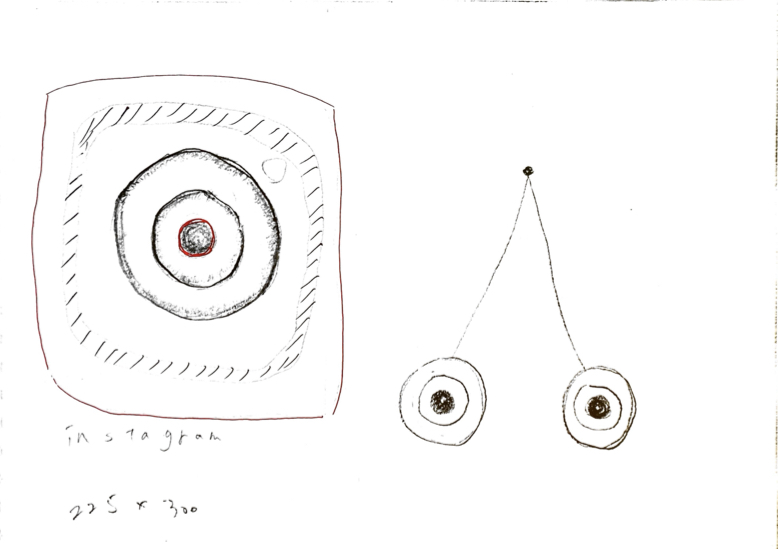

1.作品

2.構想段階のスケッチ
3.設計ファイル
dxfファイル4.作品の説明
- この作品はインスタグラムのアプリのロゴをモチーフにしました。
- この作品の感情は、「美しさ」と「気持ち悪さ」の２つの感情です。
- 「美しさ」という感情から思いついたのは、インスタグラムでした。
今の時代,美しいものを目にしたときに何かとインスタグラムに投稿しているなあと感じたので
インスタグラムのロゴをモチーフにしました。 - 「気持ち悪さ」という感情から思いついたのは、目ん玉でした。
作成する前にも班員で気持ち悪さについて挙がってきたものも目ん玉でした。
そして作品では、気持ち悪さを出すために自分の目を当てはめることで気持ち悪さを演出しました。